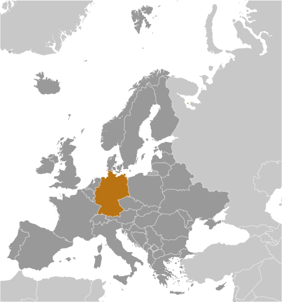
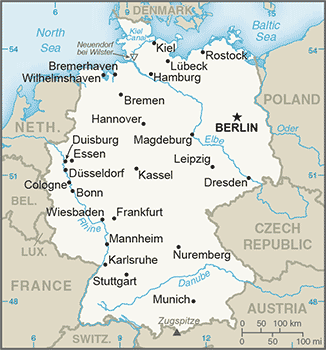
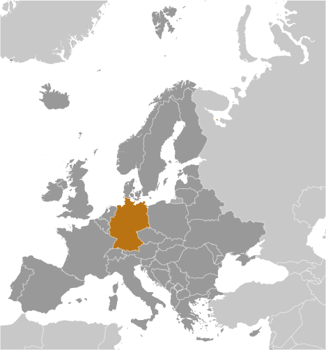
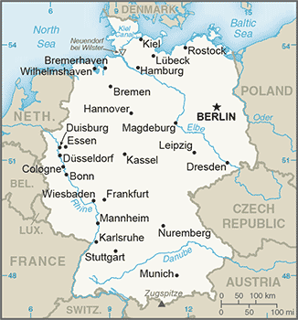

Europe :: GERMANY
Introduction :: GERMANY
-
As Europe's largest economy and second most populous nation (after Russia), Germany is a key member of the continent's economic, political, and defense organizations. European power struggles immersed Germany in two devastating World Wars in the first half of the 20th century and left the country occupied by the victorious Allied powers of the US, UK, France, and the Soviet Union in 1945. With the advent of the Cold War, two German states were formed in 1949: the western Federal Republic of Germany (FRG) and the eastern German Democratic Republic (GDR). The democratic FRG embedded itself in key western economic and security organizations, the EC, which became the EU, and NATO, while the communist GDR was on the front line of the Soviet-led Warsaw Pact. The decline of the USSR and the end of the Cold War allowed for German reunification in 1990. Since then, Germany has expended considerable funds to bring eastern productivity and wages up to western standards. In January 1999, Germany and 10 other EU countries introduced a common European exchange currency, the euro.
Geography :: GERMANY
-
Central Europe, bordering the Baltic Sea and the North Sea, between the Netherlands and Poland, south of Denmark51 00 N, 9 00 EEuropetotal: 357,022 sq kmland: 348,672 sq kmwater: 8,350 sq kmcountry comparison to the world: 64three times the size of Pennsylvania; slightly smaller than Montanatotal: 3,714 kmborder countries (9): Austria 801 km, Belgium 133 km, Czech Republic 704 km, Denmark 140 km, France 418 km, Luxembourg 128 km, Netherlands 575 km, Poland 467 km, Switzerland 348 km2,389 kmterritorial sea: 12 nmexclusive economic zone: 200 nmcontinental shelf: 200-m depth or to the depth of exploitationtemperate and marine; cool, cloudy, wet winters and summers; occasional warm mountain (foehn) windlowlands in north, uplands in center, Bavarian Alps in southmean elevation: 263 melevation extremes: lowest point: Neuendorf bei Wilster -3.5 mhighest point: Zugspitze 2,963 mcoal, lignite, natural gas, iron ore, copper, nickel, uranium, potash, salt, construction materials, timber, arable landagricultural land: 48%arable land 34.1%; permanent crops 0.6%; permanent pasture 13.3%forest: 31.8%other: 20.2% (2011 est.)6,500 sq km (2012)most populous country in Europe; a fairly even distribution throughout most of the country, with urban areas attracting larger and denser populations, particularly in the far western part of the industrial state of North Rhine-Westphaliafloodingemissions from coal-burning utilities and industries contribute to air pollution; acid rain, resulting from sulfur dioxide emissions, is damaging forests; pollution in the Baltic Sea from raw sewage and industrial effluents from rivers in eastern Germany; hazardous waste disposal; government established a mechanism for ending the use of nuclear power by 2022; government working to meet EU commitment to identify nature preservation areas in line with the EU's Flora, Fauna, and Habitat directiveparty to: Air Pollution, Air Pollution-Nitrogen Oxides, Air Pollution-Persistent Organic Pollutants, Air Pollution-Sulfur 85, Air Pollution-Sulfur 94, Air Pollution-Volatile Organic Compounds, Antarctic-Environmental Protocol, Antarctic-Marine Living Resources, Antarctic Seals, Antarctic Treaty, Biodiversity, Climate Change, Climate Change-Kyoto Protocol, Desertification, Endangered Species, Environmental Modification, Hazardous Wastes, Law of the Sea, Marine Dumping, Ozone Layer Protection, Ship Pollution, Tropical Timber 83, Tropical Timber 94, Wetlands, Whalingsigned, but not ratified: none of the selected agreementsstrategic location on North European Plain and along the entrance to the Baltic Sea; most major rivers in Germany - the Rhine, Weser, Oder, Elbe - flow northward; the Danube, which originates in the Black Forest, flows eastward
People and Society :: GERMANY
-
80,594,017 (July 2017 est.)country comparison to the world: 19noun: German(s)adjective: GermanGerman 91.5%, Turkish 2.4%, other 6.1% (made up largely of Polish, Italian, Romanian, Syrian, and Greek)German (official)note: Danish, Frisian, Sorbian, and Romani are official minority languages; Low German, Danish, North Frisian, Sater Frisian, Lower Sorbian, Upper Sorbian, and Romani are recognized as regional languages under the European Charter for Regional or Minority LanguagesRoman Catholic 29%, Protestant 27%, Muslim 4.4%, Orthodox Christian 1.9%, other 1.7%, none or members of unrecorded religious groups 36% (2015 est.)0-14 years: 12.82% (male 5,304,341/female 5,028,776)15-24 years: 10.09% (male 4,145,486/female 3,986,302)25-54 years: 40.45% (male 16,467,975/female 16,133,964)55-64 years: 14.58% (male 5,834,179/female 5,913,322)65 years and over: 22.06% (male 7,822,221/female 9,957,451) (2017 est.)total dependency ratio: 52.1youth dependency ratio: 19.9elderly dependency ratio: 32.1potential support ratio: 3.1 (2015 est.)total: 47.1 yearsmale: 46 yearsfemale: 48.2 years (2017 est.)country comparison to the world: 3-0.16% (2017 est.)country comparison to the world: 2108.6 births/1,000 population (2017 est.)country comparison to the world: 21311.7 deaths/1,000 population (2017 est.)country comparison to the world: 241.5 migrant(s)/1,000 population (2017 est.)country comparison to the world: 54most populous country in Europe; a fairly even distribution throughout most of the country, with urban areas attracting larger and denser populations, particularly in the far western part of the industrial state of North Rhine-Westphaliaurban population: 75.7% of total population (2017)rate of urbanization: 0.12% annual rate of change (2015-20 est.)BERLIN (capital) 3.563 million; Hamburg 1.831 million; Munich 1.438 million; Cologne 1.037 million (2015)at birth: 1.06 male(s)/female0-14 years: 1.05 male(s)/female15-24 years: 1.04 male(s)/female25-54 years: 1.02 male(s)/female55-64 years: 0.98 male(s)/female65 years and over: 0.78 male(s)/femaletotal population: 0.97 male(s)/female (2016 est.)29.4 years (2015 est.)6 deaths/100,000 live births (2015 est.)country comparison to the world: 168total: 3.4 deaths/1,000 live birthsmale: 3.7 deaths/1,000 live birthsfemale: 3.1 deaths/1,000 live births (2017 est.)country comparison to the world: 205total population: 80.8 yearsmale: 78.5 yearsfemale: 83.3 years (2017 est.)country comparison to the world: 341.45 children born/woman (2017 est.)country comparison to the world: 20511.3% of GDP (2014)country comparison to the world: 104.13 physicians/1,000 population (2014)8.2 beds/1,000 population (2011)improved:urban: 100% of populationrural: 100% of populationtotal: 100% of populationunimproved:urban: 0% of populationrural: 0% of populationtotal: 0% of population (2015 est.)improved:urban: 99.3% of populationrural: 99% of populationtotal: 99.2% of populationunimproved:urban: 0.7% of populationrural: 1% of populationtotal: 0.8% of population (2015 est.)NANA (2016 est.)NA22.3% (2016)country comparison to the world: 794.9% of GDP (2013)country comparison to the world: 74total: 17 yearsmale: 17 yearsfemale: 17 years (2015)total: 7.2%male: 7.9%female: 6.5% (2015 est.)country comparison to the world: 112
Government :: GERMANY
-
conventional long form: Federal Republic of Germanyconventional short form: Germanylocal long form: Bundesrepublik Deutschlandlocal short form: Deutschlandformer: German Empire, German Republic, German Reichetymology: the Gauls (Celts) of Western Europe may have referred to the newly arriving Germanic tribes who settled in neighboring areas east of the Rhine during the first centuries B.C. as "Germani," a term the Romans adopted as "Germania"; the native designation "Deutsch" comes from the Old High German "diutisc" meaning "of the people"federal parliamentary republicname: Berlingeographic coordinates: 52 31 N, 13 24 Etime difference: UTC+1 (6 hours ahead of Washington, DC, during Standard Time)daylight saving time: +1hr, begins last Sunday in March; ends last Sunday in October16 states (Laender, singular - Land); Baden-Wuerttemberg, Bayern (Bavaria), Berlin, Brandenburg, Bremen, Hamburg, Hessen (Hesse), Mecklenburg-Vorpommern (Mecklenburg-Western Pomerania), Niedersachsen (Lower Saxony), Nordrhein-Westfalen (North Rhine-Westphalia), Rheinland-Pfalz (Rhineland-Palatinate), Saarland, Sachsen (Saxony), Sachsen-Anhalt (Saxony-Anhalt), Schleswig-Holstein, Thueringen (Thuringia); note - Bayern, Sachsen, and Thueringen refer to themselves as free states (Freistaaten, singular - Freistaat), while Hamburg prides itself on being a Free and Hanseatic City (Freie und Hansestadt)18 January 1871 (establishment of the German Empire); divided into four zones of occupation (UK, US, USSR, and France) in 1945 following World War II; Federal Republic of Germany (FRG or West Germany) proclaimed on 23 May 1949 and included the former UK, US, and French zones; German Democratic Republic (GDR or East Germany) proclaimed on 7 October 1949 and included the former USSR zone; West Germany and East Germany unified on 3 October 1990; all four powers formally relinquished rights on 15 March 1991; notable earlier dates: 10 August 843 (Eastern Francia established from the division of the Carolingian Empire); 2 February 962 (crowning of OTTO I, recognized as the first Holy Roman Emperor)Unity Day, 3 October (1990)history: previous 1919 (Weimar Constitution); latest drafted 10 to 23 August 1948, approved 12 May 1949, promulgated 23 May 1949, entered into force 24 May 1949amendments: proposed by Parliament; passage and enactment into law require two-thirds majority vote by both the Bundesrat (upper house) and the Bundestag (lower house) of Parliament; articles including those on basic human rights and freedoms cannot be amended; amended many times, last in 2012 (2016)civil law systemaccepts compulsory ICJ jurisdiction with reservations; accepts ICCt jurisdictioncitizenship by birth: nocitizenship by descent only: at least one parent must be a German citizen or a resident alien who has lived in Germany at least 8 yearsdual citizenship recognized: yes, but requires prior permission from governmentresidency requirement for naturalization: 8 years18 years of age; universal; age 16 for some state and municipal electionschief of state: President Frank-Walter STEINMEIER (since 19 March 2017; inaugurated 22 March 2017)head of government: Chancellor Angela MERKEL (since 22 November 2005)cabinet: Cabinet or Bundesminister (Federal Ministers) recommended by the chancellor, appointed by the presidentelections/appointments: president indirectly elected for a 5-year term (eligible for a second term) by a Federal Convention consisting of the 630-member Federal Parliament (Bundestag) and 630 delegates indirectly elected by the state parliaments; election last held on 12 February 2017 (next to be held February 2022); chancellor indirectly elected by absolute majority by the Federal Parliament for a 4-year term; Federal Parliament vote for chancellor last held on 17 December 2013 (next to be held following the general election, 24 September 2017)election results: Frank-Walter STEINMEIER elected president; Federal Convention vote count - Frank-Walter STEINMEIER (SPD) 931, Christopher BUTTERWEGGE (The Left) 128, Albrecht GLASER (Alternative for Germany AfD) 42, Alexander HOLD (BVB/FW) 25, Engelbert SONNEBORN (Pirates) 10; Angela MERKEL (CDU) reelected chancellor; Federal Parliament vote - 462 for, 150 against, 49 abstentionsdescription: bicameral Parliament or Parlament consists of the Federal Council or Bundesrat (69 seats; members appointed by each of the 16 state governments) and the Federal Diet or Bundestag (631 seats - total seats can vary each electoral term; approximately one-half of members directly elected in multi-seat constituencies by proportional representation vote and approximately one-half directly elected in single-seat constituencies by simple majority vote; members serve 4-year terms)elections: Bundestag - last held on 24 September 2017 (next to be held in 2021); most postwar German governments have been coalitions; note - there are no elections for the Bundesrat; composition is determined by the composition of the state-level governments; the composition of the Bundesrat has the potential to change any time one of the 16 states holds an electionelection results: Bundestag - percent of vote by party - CDU/CSU 32.9%, SPD 20.5%, AfD 12.6%, FDP 10.8%, The Left 9.2%, Alliance '90/Greens 8.9%, other 5%; seats by party - CDU/CSU 246, SPD 153, FDP 80, The Left 69, Alliance '90/Greens 67highest court(s): Federal Court of Justice (court consists of 127 judges including the court president, vice-presidents, presiding judges, and other judges, and organized into 25 Senates subdivided into 12 civil panels, 5 criminal panels, and 8 special panels; Federal Constitutional Court or Bundesverfassungsgericht (consists of 2 Senates each subdivided into 3 chambers, each with a chairman and 8 members)judge selection and term of office: Federal Court of Justice judges selected by the Judges Election Committee, which consists of the Secretaries of Justice from each of the 16 federated States and 16 members appointed by the Federal Parliament; judges appointed by the president of Germany; judges serve until mandatory retirement at age 65; Federal Constitutional Court judges - one-half elected by the House of Representatives and one-half by the Senate; judges appointed for 12-year terms with mandatory retirement at age 68subordinate courts: Federal Administrative Court; Federal Finance Court; Federal Labor Court; Federal Social Court; each of the 16 German states or Land has its own constitutional court and a hierarchy of ordinary (civil, criminal, family) and specialized (administrative, finance, labor, social) courtsAlliance '90/Greens [Cem OEZDEMIR and Simone PETER]Alternative for Germany or AfD [Joerg MEUTHEN]Christian Democratic Union or CDU [Angela MERKEL]Christian Social Union or CSU [Horst SEEHOFER]Free Democratic Party or FDP [Christian LINDNER]Pirate Party Germany or Pirates [Stefan KORNER]The Left or Die Linke [Katja KIPPING and Bernd RIEXINGER]Social Democratic Party or SPD [Martin SCHULZ]United Civil Movements of Brandenburg/Free Voters [Peter VIDA]business associations and employers' organizationstrade unions; religious, immigrant, expellee, and veterans groupsADB (nonregional member), AfDB (nonregional member), Arctic Council (observer), Australia Group, BIS, BSEC (observer), CBSS, CD, CDB, CE, CERN, EAPC, EBRD, ECB, EIB, EITI (implementing country), EMU, ESA, EU, FAO, FATF, G-5, G-7, G-8, G-10, G-20, IADB, IAEA, IBRD, ICAO, ICC (national committees), ICCt, ICRM, IDA, IEA, IFAD, IFC, IFRCS, IGAD (partners), IHO, ILO, IMF, IMO, IMSO, Interpol, IOC, IOM, IPU, ISO, ITSO, ITU, ITUC (NGOs), MIGA, MINURSO, MINUSMA, NATO, NEA, NSG, OAS (observer), OECD, OPCW, OSCE, Pacific Alliance (observer), Paris Club, PCA, Schengen Convention, SELEC (observer), SICA (observer), UN, UNAMID, UNCTAD, UNESCO, UNHCR, UNIDO, UNIFIL, UNMISS, UNRWA, UNWTO, UPU, WCO, WHO, WIPO, WMO, WTO, ZCchief of mission: Ambassador Hans Peter WITTIG (since 21 May 2014)chancery: 4645 Reservoir Road NW, Washington, DC 20007telephone: [1] (202) 298-4000FAX: [1] (202) 298-4249consulate(s) general: Atlanta, Boston, Chicago, Houston, Los Angeles, Miami, New York, San Franciscochief of mission: Ambassador (vacant); Charge d'Affaires Kent LOGSDON (since 20 January 2017)embassy: Pariser Platz 2mailing address: Clayallee 170, 14191 Berlintelephone: [49] (30) 8305-0FAX: [49] (30) 8305-1215consulate(s) general: Dusseldorf, Frankfurt am Main, Hamburg, Leipzig, Munichthree equal horizontal bands of black (top), red, and gold; these colors have played an important role in German history and can be traced back to the medieval banner of the Holy Roman Emperor - a black eagle with red claws and beak on a gold fieldgolden eagle; national colors: black, red, yellowname: "Das Lied der Deutschen" (Song of the Germans)lyrics/music: August Heinrich HOFFMANN VON FALLERSLEBEN/Franz Joseph HAYDNnote: adopted 1922; the anthem, also known as "Deutschlandlied" (Song of Germany), was originally adopted for its connection to the March 1848 liberal revolution; following appropriation by the Nazis of the first verse, specifically the phrase, "Deutschland, Deutschland ueber alles" (Germany, Germany above all) to promote nationalism, it was banned after 1945; in 1952, its third verse was adopted by West Germany as its national anthem; in 1990, it became the national anthem for the reunited Germany
Economy :: GERMANY
-
The German economy - the fifth largest economy in the world in PPP terms and Europe's largest - is a leading exporter of machinery, vehicles, chemicals, and household equipment and benefits from a highly skilled labor force. Like its Western European neighbors, Germany faces significant demographic challenges to sustained long-term growth. Low fertility rates and a large increase in net immigration are increasing pressure on the country's social welfare system and necessitate structural reforms.Reforms launched by the government of Chancellor Gerhard SCHROEDER (1998-2005), deemed necessary to address chronically high unemployment and low average growth, contributed to strong growth and falling unemployment. These advances, as well as a government subsidized, reduced working hour scheme, help explain the relatively modest increase in unemployment during the 2008-09 recession - the deepest since World War II. The German Government introduced a minimum wage in 2015 that increased to $9.79 (8.84 euros) in January 2017.Stimulus and stabilization efforts initiated in 2008 and 2009 and tax cuts introduced in Chancellor Angela MERKEL's second term increased Germany's total budget deficit - including federal, state, and municipal - to 4.1% in 2010, but slower spending and higher tax revenues reduced the deficit to 0.8% in 2011 and in 2016 Germany reached a budget surplus of 0.6%. A constitutional amendment approved in 2009 limits the federal government to structural deficits of no more than 0.35% of GDP per annum as of 2016, though the target was already reached in 2012.The German economy suffers from low levels of investment, and a government plan to invest 15 billion euros during 2016-18, largely in infrastructure, is intended to spur needed private investment. Following the March 2011 Fukushima nuclear disaster, Chancellor Angela MERKEL announced in May 2011 that eight of the country's 17 nuclear reactors would be shut down immediately and the remaining plants would close by 2022. Germany plans to replace nuclear power largely with renewable energy, which accounted for 29.5% of gross electricity consumption in 2016, up from 9% in 2000. Before the shutdown of the eight reactors, Germany relied on nuclear power for 23% of its electricity generating capacity and 46% of its base-load electricity production. Domestic consumption, bolstered by low energy prices and a weak euro, and exports are likely to drive German GDP growth again in 2017.$3.997 trillion (2016 est.)$3.874 trillion (2015 est.)$3.776 trillion (2014 est.)note: data are in 2016 dollarscountry comparison to the world: 6$3.479 trillion (2016 est.)1.9% (2016 est.)1.5% (2015 est.)1.9% (2014 est.)country comparison to the world: 142$48,400 (2016 est.)$48,000 (2015 est.)$47,700 (2014 est.)note: data are in 2016 dollarscountry comparison to the world: 3127.5% of GDP (2016 est.)27.7% of GDP (2015 est.)27% of GDP (2014 est.)country comparison to the world: 38household consumption: 53.7%government consumption: 19.7%investment in fixed capital: 19.9%investment in inventories: -0.8%exports of goods and services: 45.9%imports of goods and services: -38.4% (2016 est.)agriculture: 0.6%industry: 30.3%services: 69.1%(2016 est.)potatoes, wheat, barley, sugar beets, fruit, cabbages; milk products; cattle, pigs, poultryamong the world's largest and most technologically advanced producers of iron, steel, coal, cement, chemicals, machinery, vehicles, machine tools, electronics, automobiles, food and beverages, shipbuilding, textiles1.3% (2016 est.)country comparison to the world: 13545.42 million (2016 est.)country comparison to the world: 15agriculture: 1.4%industry: 24.2%services: 74.3% (2016)4.2% (2016 est.)4.6% (2015 est.)country comparison to the world: 5416.7% (2015 est.)lowest 10%: 3.6%highest 10%: 24% (2000)27 (2006)30 (1994)country comparison to the world: 137revenues: $1.562 trillionexpenditures: $1.536 trillion (2016 est.)45.1% of GDP (2016 est.)country comparison to the world: 230.8% of GDP (2016 est.)country comparison to the world: 2968.4% of GDP (2016 est.)71.2% of GDP (2015 est.)note: general government gross debt is defined in the Maastricht Treaty as consolidated general government gross debt at nominal value, outstanding at the end of the year in the following categories of government liabilities (as defined in ESA95): currency and deposits (AF.2), securities other than shares excluding financial derivatives (AF.3, excluding AF.34), and loans (AF.4); the general government sector comprises the sub-sectors of central government, state government, local government and social security funds; the series are presented as a percentage of GDP and in millions of euro; GDP used as a denominator is the gross domestic product at current market prices; data expressed in national currency are converted into euro using end-of-year exchange rates provided by the European Central Bankcountry comparison to the world: 53calendar year0.4% (2016 est.)0.2% (2015 est.)country comparison to the world: 660.25% (31 December 2016)0.3% (31 December 2010)note: this is the European Central Bank's rate on the marginal lending facility, which offers overnight credit to banks in the euro areacountry comparison to the world: 1351.6% (31 December 2016 est.)1.84% (31 December 2015 est.)country comparison to the world: 181$2.016 trillion (31 December 2016 est.)$1.923 trillion (31 December 2015 est.)note: see entry for the European Union for money supply for the entire euro area; the European Central Bank (ECB) controls monetary policy for the 18 members of the Economic and Monetary Union (EMU); individual members of the EMU do not control the quantity of money circulating within their own borderscountry comparison to the world: 5$4.347 trillion (31 December 2014 est.)$4.451 trillion (31 December 2013 est.)country comparison to the world: 5$4.433 trillion (31 December 2016 est.)$4.452 trillion (31 December 2015 est.)country comparison to the world: 5$1.716 trillion (31 December 2015 est.)$1.739 trillion (31 December 2014 est.)$1.936 trillion (31 December 2013 est.)country comparison to the world: 7$290.4 billion (2016 est.)$288.2 billion (2015 est.)country comparison to the world: 2$1.322 trillion (2016 est.)$1.308 trillion (2015 est.)country comparison to the world: 4motor vehicles, machinery, chemicals, computer and electronic products, electrical equipment, pharmaceuticals, metals, transport equipment, foodstuffs, textiles, rubber and plastic productsUS 8.9%, France 8.4%, UK 7.1%, Netherlands 6.5%, China 6.4%, Italy 5.1%, Austria 5%, Poland 4.5%, Switzerland 4.2% (2016)$1.022 trillion (2016 est.)$1.018 trillion (2015 est.)country comparison to the world: 4machinery, data processing equipment, vehicles, chemicals, oil and gas, metals, electric equipment, pharmaceuticals, foodstuffs, agricultural productsNetherlands 13.3%, China 7.3%, France 7.3%, Belgium 6.1%, Italy 5.5%, Poland 5.2%, Czech Republic 4.7%, US 4.6%, Switzerland 4.4%, Austria 4.4%, UK 4.1% (2016)$185.3 billion (31 December 2016 est.)$173.7 billion (31 December 2015 est.)country comparison to the world: 13$5.326 trillion (31 March 2016 est.)$5.21 trillion (31 March 2015 est.)country comparison to the world: 5$1.391 trillion (31 December 2016 est.)$1.374 trillion (31 December 2015 est.)country comparison to the world: 8$1.981 trillion (31 December 2016 est.)$1.955 trillion (31 December 2015 est.)country comparison to the world: 4euros (EUR) per US dollar -0.9214 (2016 est.)0.885 (2015 est.)0.885 (2014 est.)0.7634 (2013 est.)0.7752 (2012 est.)
Energy :: GERMANY
-
electrification - total population: 100% (2016)588.5 billion kWh (2015 est.)country comparison to the world: 8514.6 billion kWh (2015 est.)country comparison to the world: 878.86 billion kWh (2016 est.)country comparison to the world: 228.34 billion kWh (2016 est.)country comparison to the world: 6204.1 million kW (2015 est.)country comparison to the world: 742.6% of total installed capacity (2015 est.)country comparison to the world: 1675.3% of total installed capacity (2015 est.)country comparison to the world: 232.2% of total installed capacity (2015 est.)country comparison to the world: 13649.9% of total installed capacity (2015 est.)country comparison to the world: 346,590 bbl/day (2016 est.)country comparison to the world: 581,987 bbl/day (2016 est.)country comparison to the world: 681.837 million bbl/day (2016 est.)country comparison to the world: 7145.4 million bbl (1 January 2017 es)country comparison to the world: 662.198 million bbl/day (2016 est.)country comparison to the world: 102.41 million bbl/day (2016 est.)country comparison to the world: 10474,300 bbl/day (2016 est.)country comparison to the world: 17800,500 bbl/day (2016 est.)country comparison to the world: 108.73 billion cu m (2015 est.)country comparison to the world: 44773.2 billion cu m (2015 est.)country comparison to the world: 232.51 billion cu m (2015 est.)country comparison to the world: 12102.5 billion cu m (2015 est.)country comparison to the world: 341.99 billion cu m (1 January 2017 es)country comparison to the world: 67744 million Mt (2015 est.)country comparison to the world: 7
Communications :: GERMANY
-
total subscriptions: 44.31 millionsubscriptions per 100 inhabitants: 55 (July 2016 est.)country comparison to the world: 5total: 94,432,800subscriptions per 100 inhabitants: 117 (July 2016 est.)country comparison to the world: 15general assessment: one of the world's most technologically advanced telecommunications systems; as a result of intensive capital expenditures since reunification, the formerly backward system of the eastern part of the country, dating back to World War II, has been modernized and integrated with that of the western partdomestic: extensive system of automatic telephone exchanges connected by modern networks of fiber-optic cable, coaxial cable, microwave radio relay, and a domestic satellite system; cellular telephone service is widely available, expanding rapidly, and includes roaming service to many foreign countriesinternational: country code - 49; Germany's international service is excellent worldwide, consisting of extensive land and undersea cable facilities as well as earth stations in the Inmarsat, Intelsat, Eutelsat, and Intersputnik satellite systems (2015)a mixture of publicly operated and privately owned TV and radio stations; national and regional public broadcasters compete with nearly 400 privately owned national and regional TV stations; more than 90% of households have cable or satellite TV; hundreds of radio stations including multiple national radio networks, regional radio networks, and a large number of local radio stations (2008).detotal: 72,365,643percent of population: 89.6% (July 2016 est.)country comparison to the world: 8
Transportation :: GERMANY
-
number of registered air carriers: 20inventory of registered aircraft operated by air carriers: 1,113annual passenger traffic on registered air carriers: 115,540,886annual freight traffic on registered air carriers: 6,985,007,915 mt-km (2015)D (2016)539 (2013)country comparison to the world: 13total: 318over 3,047 m: 142,438 to 3,047 m: 491,524 to 2,437 m: 60914 to 1,523 m: 70under 914 m: 125 (2017)total: 2211,524 to 2,437 m: 1914 to 1,523 m: 35under 914 m: 185 (2013)23 (2013)condensate 37 km; gas 26,985 km; oil 2,826 km; refined products 4,479 km; water 8 km (2013)total: 43,468.3 kmstandard gauge: 43,209.3 km 1.435-m gauge (19,973 km electrified)narrow gauge: 220 km 1.000-m gauge (79 km electrified); 15 km 0.900-m gauge; 24 km 0.750-m gauge (2014)country comparison to the world: 6total: 645,000 kmpaved: 645,000 km (includes 12,800 km of expressways)note: includes local roads (2010)country comparison to the world: 127,467 km (Rhine River carries most goods; Main-Danube Canal links North Sea and Black Sea) (2012)country comparison to the world: 18total: 427by type: barge carrier 2, bulk carrier 6, cargo 51, carrier 1, chemical tanker 15, container 298, liquefied gas 6, passenger 4, passenger/cargo 24, petroleum tanker 10, refrigerated cargo 3, roll on/roll off 6, vehicle carrier 1foreign-owned: 6 (Finland 3, Netherlands 1, Switzerland 2)registered in other countries: 3,420 (Antigua and Barbuda 1094, Australia 2, Bahamas 30, Bermuda 14, Brazil 6, Bulgaria 12, Burma 1, Cayman Islands 3, Cook Islands 1, Curacao 25, Cyprus 192, Denmark 9, Dominica 5, Estonia 1, France 1, Gibraltar 123, Hong Kong 10, Isle of Man 56, Jamaica 10, Liberia 1185, Luxembourg 9, Malta 135, Marshall Islands 248, Morocco 1, Netherlands 86, NZ 2, Panama 24, Papua New Guinea 1, Philippines 2, Portugal 14, Saint Vincent and the Grenadines 3, Singapore 32, Slovakia 3, Spain 4, Sri Lanka 8, Sweden 3, UK 59, US 5, Venezuela 1) (2010)country comparison to the world: 25major seaport(s): Baltic Sea - Rostock; North Sea - Wilhelmshavenriver port(s): Bremen (Weser); Bremerhaven (Geeste); Duisburg, Karlsruhe, Neuss-Dusseldorf (Rhine); Brunsbuttel, Hamburg (Elbe); Lubeck (Wakenitz)oil terminal(s): Brunsbuttel Canal terminalscontainer port(s): Bremen/Bremerhaven (5,547,000), Hamburg (8,821,000) (2015)LNG terminal(s) (import): Hamburg
Military and Security :: GERMANY
-
1.19% of GDP (2016 est.)1.19% of GDP (2015)1.19% of GDP (2014)1.23% of GDP (2013)1.31% of GDP (2012)country comparison to the world: 74Federal Armed Forces (Bundeswehr): Army (Heer), Navy (Deutsche Marine, includes naval air arm), Air Force (Luftwaffe), Joint Support Service (Streitkraeftebasis, SKB), Central Medical Service (Zentraler Sanitaetsdienst, ZSanDstBw), Cyber and Information Space Command (Kommando Cyber- und Informationsraum, Kdo CIR) (2017)17-23 years of age for male and female voluntary military service; conscription ended 1 July 2011; service obligation 8-23 months or 12 years; women have been eligible for voluntary service in all military branches and positions since 2001 (2013)
Transnational Issues :: GERMANY
-
nonerefugees (country of origin): 375,122 (Syria); 86,045 (Iraq); 46,292 (Afghanistan); 30,020 (Eritrea); 22,910 (Iran); 19,136 (Turkey); 9,189 (Serbia and Kosovo); 7,879 (Somalia); 5,255 (Russia); 5,169 (Pakistan) (2016); 10,305 (Ukraine) (2017) note: estimate represents asylum applicants since Ukraine crisis began in 2014 until September 2017stateless persons: 12,017 (2016)source of precursor chemicals for South American cocaine processors; transshipment point for and consumer of Southwest Asian heroin, Latin American cocaine, and European-produced synthetic drugs; major financial center